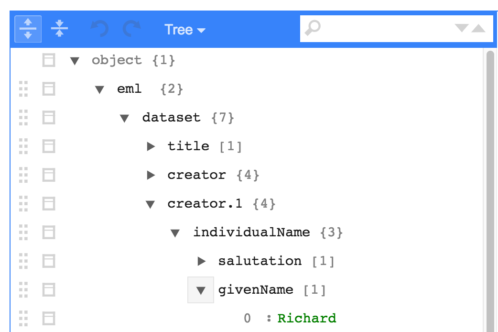
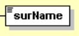

Explore EML
The first task when editing an eml file is navigating the eml file. An eml file is organized in a structure that contains many lists nested within other lists.
The function EML::eml_view() (install.packages("listviewer") if it doesn’t work) allows you to get a crude view of an eml file in the viewer. It can be useful for exploring the file.

To navigate this complex structure in R, use the @ symbol. The @ symbol allows you to go deeper into the eml structure. However, you have to tell R where you want to go in the structure when you use the @ symbol. For example, if you want to go into the dataset of your eml you would use the command eml@dataset. If you want to go to the creators of your data set you would use eml@dataset@creator. Note here that creators are contained within dataset. If you aren’t sure where you want to go, hit the tab button on your keyboard after typing @ and a list of available locations in the structure will appear (e.g., eml@<TAB>):
RStudio Autocompletion Example
Note if you hit tab, and the only option is .Data, this implies most likely that you are trying to go deeper within a list. For example eml@dataset@creator@<TAB> will return only .Data. This is because creator is a list object (i.e. you can have multiple creators). If you want to go deeper into the eml structure, you first must tell R which creator you are interested in. Do this by writing [[i]] first where i is index of the creator you are concerned with.
For example, if you want to look at the first creator i = 1. Now eml@dataset@creator[[1]]@<TAB> will give you many more options. Note, .Data also sometimes means you have reached the end of a branch in the eml structure.
Another great resource for navigating the eml structure is looking at the schema which defines the structure (also here). However, the schema is complicated and may take some time to get familiar with before you will be able to fully understand it.
For example, let’s take a look at eml-party. To start off, notice that some elements are in solid boxes, whereas others are in dashed boxes.
{kind=link}

A solid box indicates that the element is required if the element above it (to the left in the schema) is used, whereas a dashed box indicates that the element is optional.
For a more detailed description of the eml schema, see the reference section on exploring EML.
Access specific elements
The eml_get function is a powerful tool for exploring EML (more on that here). It takes any chunk of eml and returns all instances of the element you specify. Note: you’ll have to specify the element of interest exactly, according to the spelling/capitalization conventions used in EML. Here are some examples:
library(EML)
eml <- EML::read_eml(system.file("example-eml.xml", package = "arcticdatautils"))
EML::eml_get(eml, "creator")## [[1]]
## An object of class "ListOfcreator"
## [[1]]
## <creator system="uuid">
## <individualName>
## <givenName>Bryce</givenName>
## <surName>Mecum</surName>
## </individualName>
## <organizationName>National Center for Ecological Analysis and Synthesis</organizationName>
## </creator>EML::eml_get(eml, "boundingCoordinates")## <boundingCoordinates>
## <westBoundingCoordinate>-135</westBoundingCoordinate>
## <eastBoundingCoordinate>-134</eastBoundingCoordinate>
## <northBoundingCoordinate>59</northBoundingCoordinate>
## <southBoundingCoordinate>57</southBoundingCoordinate>
## </boundingCoordinates>EML::eml_get(eml, "url")## [1] "ecogrid://knb/urn:uuid:89bec5d0-26db-48ac-ae54-e1b4c999c456"You can also use the which_in_eml function from the datamgmt package to get indices within an eml list. Here are some examples:
# Question: Which creators have a surName "Smith"?
n <- which_in_eml(eml@dataset@creator, "surName", "Smith")
# Answer: eml@dataset@creator[n]
# Question: Which dataTables have an entityName that begins with "2016"
n <- which_in_eml(eml@dataset@dataTable, "entityName", function(x) {grepl("^2016", x)})
# Answer: eml@dataset@dataTable[n]
# Question: Which attributes in dataTable[[1]] have a numberType "natural"?
n <- which_in_eml(eml@dataset@dataTable[[1]]@attributeList@attribute, "numberType", "natural")
# Answer: eml@dataset@dataTable[[1]]@attributeList@attribute[n]
#' # Question: Which dataTables have at least one attribute with a numberType "natural"?
n <- which_in_eml(eml@dataset@dataTable, "numberType", function(x) {"natural" %in% x})
# Answer: eml@dataset@dataTable[n]